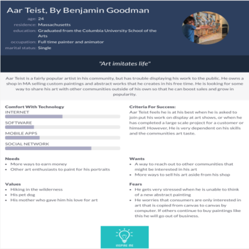
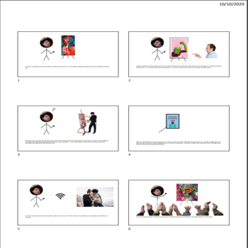
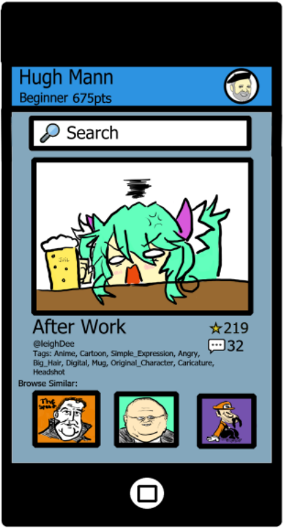

Problem Statement: Artistic Inspirations

Users (i.e. artists) are finding it time consuming and difficult to go out of their way to find new topics and appropriate references. At best they continue to draw, paint, and sculpt based on past influences, stagnating their growth as an artist, and some even choose not to practice. Our solution must provide users a randomly generated topic and appropriate reference materials.
Affinity Diagram: Artistic Inspirations

My group and I worked together, compiling our ideas in order to come up with an efficient solution.
Personas: Four personas for users using the app Inspire.me
Our group worked together to create various users of our application. They range from community artists to sales associates.
Storyboard: Four written situations that can be solved using Inspire.me
Each member of my group worked together to create scenarios for our individual persons. In these scinarios, our personas faced a problem that could be solved by using our application.
Sketches: Inspire.me
A compilation of sketches our group made to show what our application Inspire.me could look like
Paper Prototyping: A prototype of how the app Inspire.me will work

I put together a video to show how the user can interact with the Inspire.me app
Usability Testing: Artistic Inspirations

A short survey that provides a scenario applicants must go through to detrimine if the application is easy to understand.
Low-Fi Prototype: Artistic Inspirations

My group and I worked together, compiling our ideas in order to create a working prototype to desplay how our app will function.
High-Fi Prototype: Artistic Inspirations

My group and I worked together to make a high fidelity, functioning prototype of our app Inspire.me.
Final Presentation: Inspire.me

My groups professional presentation of our functioning High-Fi application.